Software Engineer & Data Enthusiast
Sarjana Teknik Informatika Universitas Palangka Raya, memiliki ketertarikan pada bidang Software Engineering dan Data Science. Berfokus pada pengembangan aplikasi serta pemanfaatan data untuk menciptakan solusi digital yang relevan, efektif, dan bermanfaat.
Tumpukan Teknologi Saya
Data Science
Python, ML, DL
Web Development
PHP, JavaScript, HTML/CSS
Backend & API
FastAPI, SQL, MySQL
Visualisasi Data
Streamlit, Tableau, Dashboard
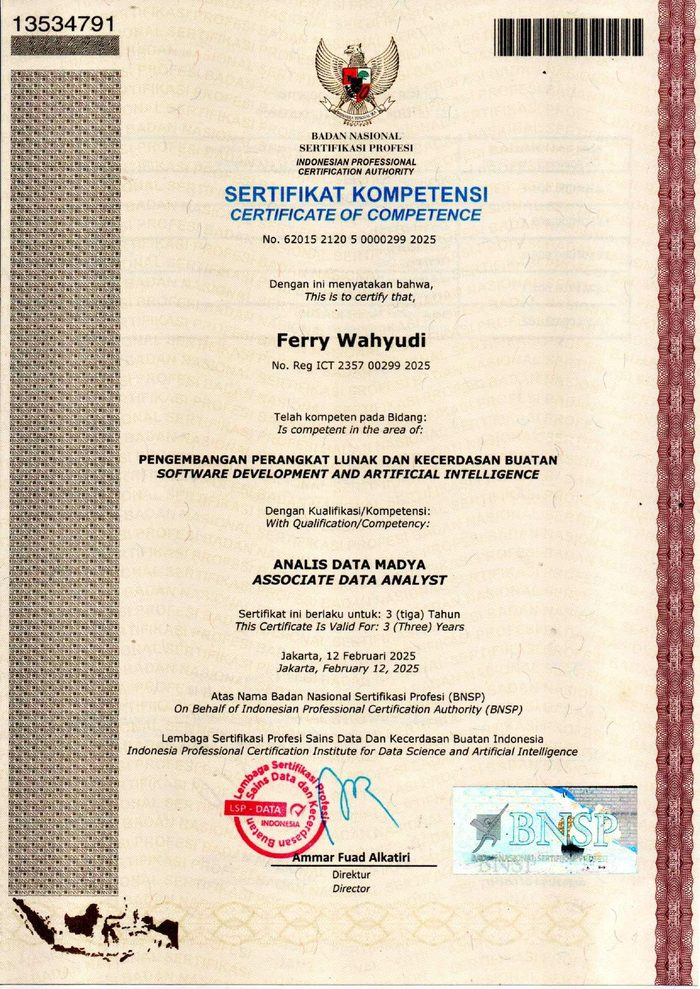
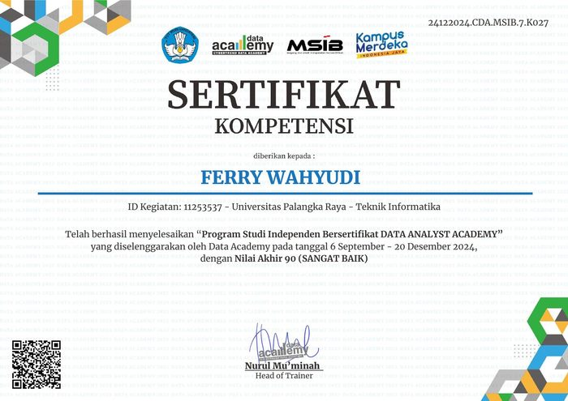
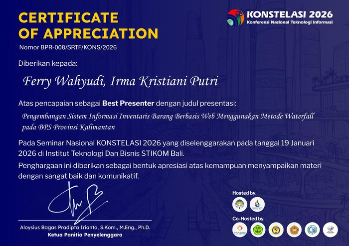
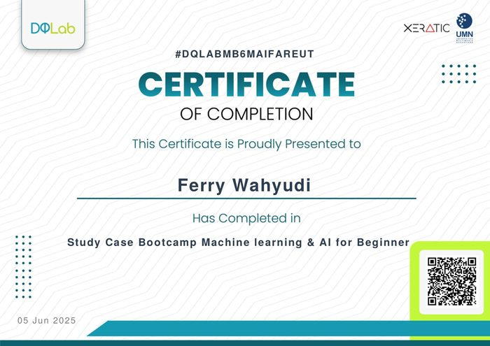
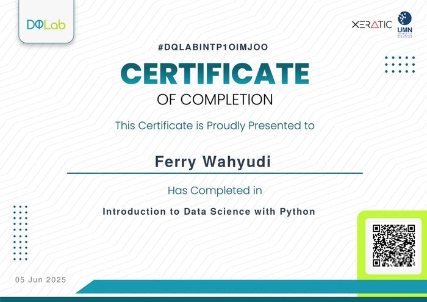
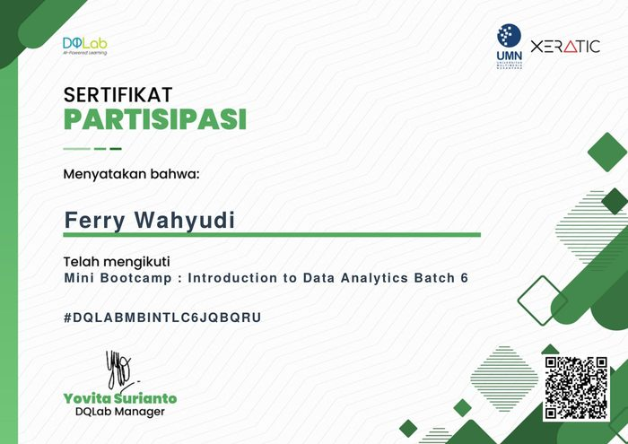
Journey
Proyek
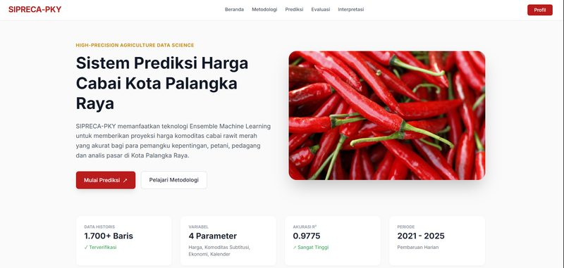
SIPRECA-PKY — Prediksi Harga Cabai Rawit Merah
Sistem peramalan harga cabai rawit merah Kota Palangka Raya berbasis ensemble machine learning (Random Forest, XGBoost, Stacking), dengan backend FastAPI dan dashboard web.
Lihat di GitHub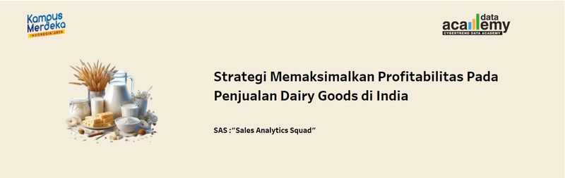
Strategi Profitabilitas Penjualan Dairy Goods di India
Proyek akhir Data Analyst Academy (MSIB): analisis data penjualan dairy goods mendalam dan penyusunan dashboard visualisasi strategis menggunakan Tableau untuk memaksimalkan profitabilitas.
Lihat Dashboard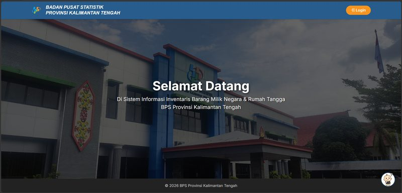
SISTARIS — Sistem Inventaris BPS Kalteng
Aplikasi web untuk mendigitalisasi pencatatan dan pengelolaan aset Barang Milik Negara (BMN).
Kunjungi Website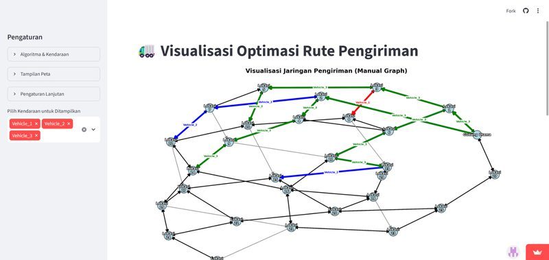
Optimasi Rute Pengiriman
Aplikasi visualisasi rute pengiriman menggunakan algoritma Dijkstra dan A* untuk rute optimal.
Kunjungi Website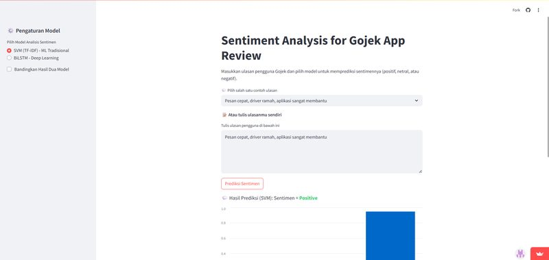
Analisis Sentimen Ulasan Gojek
Pengumpulan dan pembersihan data ulasan, dilanjutkan analisis sentimen dengan NLP.
Kunjungi Website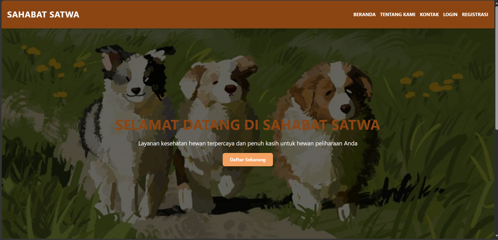
Klinik Hewan Sahabat Satwa
Website layanan klinik hewan dengan tiga peran pengguna (vet, pemilik hewan, admin), lengkap dengan manajemen reservasi dan login role-based.
Mari Terhubung
Terbuka untuk kolaborasi
Terbuka untuk peluang magang, proyek kolaborasi, maupun diskusi seputar data science dan pengembangan perangkat lunak.